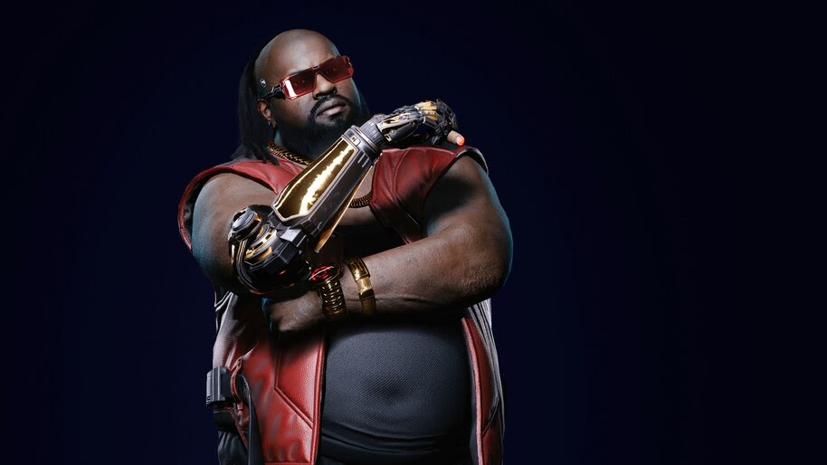
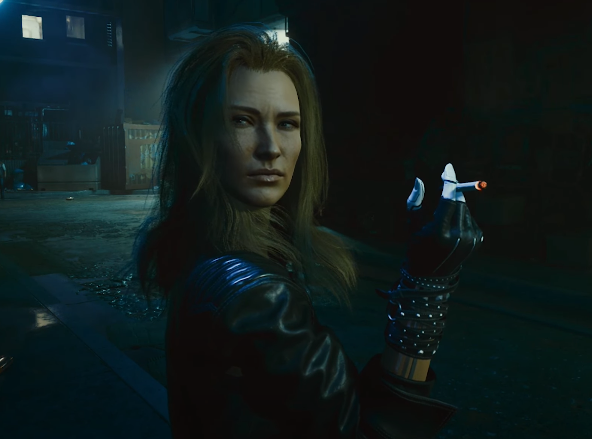
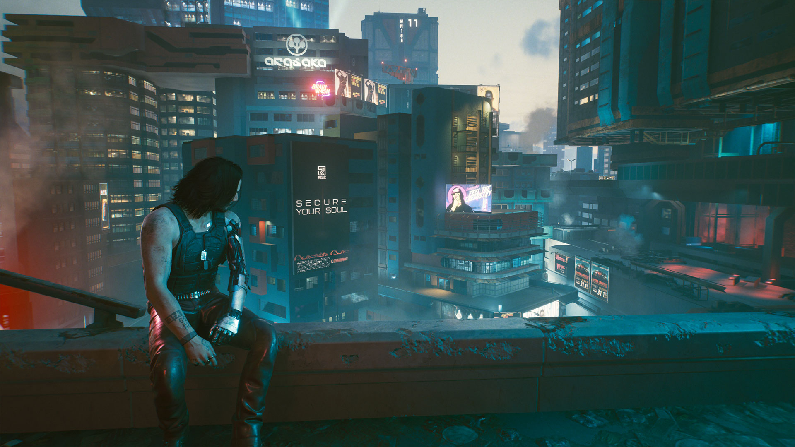

El juego comienza con la selección de uno de los tres caminos de vida para el personaje del jugador V (Gavin Drea o Cherami Leigh): Nomad, Streetkid o Corpo. Como nómada, V abandona su clan y se traslada a la gran ciudad por primera vez; como niño de la calle, V vuelve a casa en Night City después de unos años viviendo en otro lugar; y como Corpo, V es despedido repentinamente de su trabajo en Arasaka Corporation como resultado del juego de poder incompetente de su supervisor. En los dos primeros caminos de la vida, V se hace amigo del matón local Jackie Welles (Jason Hightower), mientras que en el tercero, Welles es un viejo amigo. Los tres caminos de la vida convergen en la misma secuencia de título, un montaje de las diversas aventuras de V y Welles con un netrunner, T-Bug.
En 2077, el reparador local Dexter DeShawn (Michael-Leon Wooley) contrata a V y Welles para robar un misterioso biochip conocido como la Reliquia de Arasaka Corporation. Después de adquirir la Reliquia, el plan sale mal cuando se convierten en testigos inadvertidos del asesinato del líder de la megacorporación, Saburo Arasaka (Masane Tsukayama), a manos de su traicionero hijo Yorinobu (Hideo Kimura). Yorinobu encubre el asesinato alegando que su padre había sido envenenado y desencadena una redada de seguridad, en la que T-Bug es asesinado por los netrunners de Arasaka. Se desata un tiroteo cuando V y Welles escapan, Welles resulta fatalmente herido, la funda protectora de la Reliquia está gravemente dañada y V se ve obligado a salvar la Reliquia insertando el biochip en el ciberware en su propia cabeza.

DeShawn está furioso por la atención policial no deseada. Le dispara a V en la cabeza y los deja por muertos en un vertedero. V se despierta perseguido por el fantasma digital de la icónica estrella de rock Johnny Silverhand (Keanu Reeves), quien se cree que murió en 2023 durante un intento de ataque termonuclear en la Torre Arasaka. V aprende de su ripperdoc Viktor Vector (Michael Gregory) que la bala de DeShawn activó la nanotecnología en el chip, resucitándolos, pero comenzando un proceso irreversible en el que los recuerdos y la personalidad de Silverhand sobrescribirán los suyos. El chip no se puede quitar, y a V solo le quedan unas semanas de vida, por lo que buscan una manera de eliminar Silverhand y sobrevivir.
A través de los recuerdos de Silverhand, V se entera de que en 2023, la entonces novia de Silverhand y brillante netrunner Alt Cunningham (Alix Wilton Regan) había creado Soulkiller, una inteligencia artificial capaz de copiar las mentes de netrunners a través de sus enlaces neuronales. Sin embargo, el proceso destruyó el cerebro del objetivo. Arasaka secuestró a Cunningham y la obligó a crear su propia versión de Soulkiller. Silverhand lideró un esfuerzo de rescate para salvar a Cunningham, pero no pudo encontrarla antes de que Arasaka usara Soulkiller en ella. Silverhand buscó venganza a través de su intento de ataque termonuclear, pero Arasaka lo capturó y usó Soulkiller en él también.

En 2077, Arasaka se había vuelto lo suficientemente hábil en el uso de la tecnología Soulkiller para anunciar públicamente un programa "Asegure su alma". La Reliquia surgió de la investigación secreta de Arasaka para completar el ciclo: escribir una copia digital de una mente en un cerebro humano vivo. Arasaka almacena las mentes adquiridas por Soulkiller en su fortaleza digital, Mikoshi. Finalmente, V decide montar un ataque en la Torre Arasaka, para usar Soulkiller para eliminar Silverhand de su cuerpo.
Dependiendo de las acciones del jugador a lo largo del juego, V puede elegir entre diferentes opciones para realizar el ataque. V se suicida, permite que Silverhand se apodere de su cuerpo y organice el ataque con su antiguo equipo, reúne una red de aliados que se encuentran a lo largo del juego o realiza el asalto en solitario con Silverhand. En cualquier caso, a pesar de usar con éxito Soulkiller, se revela que el daño a su cuerpo es irreversible. Dependiendo de la elección del jugador, V permanece en su cuerpo, con una expectativa de vida incierta, o permite que Silverhand se haga cargo, en cuyo caso presenta sus respetos a sus amigos y deja Night City para comenzar una nueva vida.
